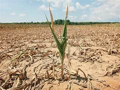

Living Flora
Cooksonia
Cooksonia is an extinct group of primitive land plants, treated as a genus, although probably not monophyletic.
Sigillaria
Sigillaria is a genus of extinct, spore-bearing, arborescent lycophyte, known from the Carboniferous and Permian periods.

Calamities
Calamites is a genus of extinct arborescent (tree-like) horsetails to which the modern horsetails (genus Equisetum) are closely related.